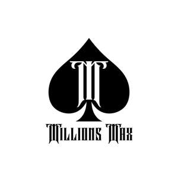

Trade Mark Journal No.2025/012 21 March 2025
UK00004169634 6 March 2025 (14,25)

- Class 14
- Jewelry; Necklaces [jewelry]; Pendants [jewelry]; Bracelets [jewelry]; Brooches [jewelry]; Jewelry brooches; Brooches being jewelry; Jewelry (Paste -) [costume jewelry]; Paste jewelry [costume jewelry]; Necklaces [jewellery, jewelry (Am.)]; Bracelets [jewellery, jewelry (Am.)]; Ornaments [jewellery, jewelry (Am.)]; Jewelry stickpins; Necklaces [jewellery]; Trinkets [jewelry]; Trinkets [jewellery, jewelry (Am.)]; Diamond jewelry; Amulets [jewelry]; Brooches [jewellery, jewelry (Am.)]; Pearls [jewelry]; Amulets [jewellery, jewelry (Am.)]; Lockets [jewelry]; Charms [jewelry]; Jewelry charms; Charms for jewelry; Pearls [jewellery, jewelry (Am.)]; Rings [jewelry]; Cloisonné jewellery [jewelry (Am.)]; Costume jewelry; Charms [jewellery, jewelry (Am.)]; Rings [jewellery, jewelry (Am.)]; Jewellery; Medallions [jewellery, jewelry (Am.)]; Lockets [jewellery, jewelry (Am.)]; Clasps for jewelry; Chains [jewellery, jewelry (Am.)]; Cloisonné jewelry; Bracelets [jewellery]; Jewelry hatpins; Ivory [jewellery, jewelry (Am.)]; Pins [jewellery, jewelry (Am.)]; Jewelry caskets; Shoe jewelry; Pendants [jewellery]; Platinum jewelry; Paste jewellery [costume jewelry (Am.)]; Paste jewellery [costume jewelry [Am.]]; Crucifixes as jewelry; Jewelry chains; Chains [jewelry]; Ornaments [jewellery]; Jewelry boxes; Ivory jewelry; Pins being jewelry; Pins [jewelry]; Cameos [jewelry]; Silver thread [jewellery, jewelry (Am.)]; Gold thread [jewellery, jewelry (Am.)]; Pet jewelry; Beads for making jewelry; Wire of precious metal [jewellery, jewelry (Am.)]; Cabochons for making jewelry; Identification bracelets [jewelry]; Rhinestones for making jewelry; Trinkets [jewellery]; Hat jewelry; Brooches [jewellery]; Jewellery brooches; Imitation jewelry; Threads of precious metal [jewellery, jewelry (Am.)]; Jewelry for pets; Jewellery, including imitation jewellery and plastic jewellery; Items of jewellery; Jewellery items; Rings being jewellery; Rings [jewellery]; Jewellery chain of precious metal for necklaces; Amulets being jewellery; Amulets [jewellery]; Costume jewellery; Charms [jewellery]; Charms for jewellery; Jewellery charms; Identification bracelets of precious metal [jewelry]; Jewelry boxes of metal; Jewelry findings; Pearls [jewellery]; Lockets [jewellery]; Wristlets [jewellery]; Plastic bracelets in the nature of jewelry; Cloisonne jewellery; Jade [jewellery]; Leather jewelry boxes; Agate as jewellery; Fashion jewellery; Pewter jewellery; Amber pendants being jewellery; Jewelry for the head; Jewellery caskets; Decorative brooches [jewellery]; Scarf clips being jewelry; Paste jewelry; Gold jewellery; Jewelry cases; Amberoid pendants being jewellery; Cloisonné jewellery; Jewellery chain of precious metal for bracelets; Clasps for jewellery; Jewelry boxes of precious metals; Jewelry caskets of precious metal; Bracelets made of embroidered textile [jewelry]; Silver thread [jewelry]; Jewelry boxes of precious metal; Shoe jewellery; Jewellery stones; Women's jewelry; Children's jewelry; Jewellery in semi-precious metals; Gold thread jewelry; Gold thread [jewelry]; Musical jewelry boxes; Jewellery products; Plastic costume jewellery; Wire of precious metal [jewelry]; Beads for making jewellery; Jewellery for personal adornment; Crucifixes of precious metal, other than jewelry.
- Class 25
- Clothes; Clothing; Swaddling clothes; Baby clothes; Beach clothes; Nappy pants [clothing]; Denims [clothing]; Work clothes; Jackets [clothing]; Shorts [clothing]; Clothes for sports; Aprons [clothing]; Drawers [clothing]; Drawers as clothing; Jackets (Stuff -) [clothing]; Stuff jackets [clothing]; Clothes for sport; Linen clothing; Headbands [clothing]; Headbands for clothing; Kerchiefs [clothing]; Gloves [clothing]; Gloves as clothing; Bottoms [clothing]; Capes (clothing); Furs [clothing]; Trunks being clothing; Maternity clothing; Babies' pants [clothing]; Jerseys [clothing]; Layettes [clothing]; Clothing layettes; Woolen clothing; Hoods [clothing]; Oilskins [clothing]; Clothing for leisure wear; Clothing for babies; Ready-to-wear clothing; Garments for protecting clothing; Gabardines [clothing]; Bodies [clothing]; Belts [clothing]; Belts for clothing; Tops [clothing]; Gussets for underwear [parts of clothing]; Playsuits [clothing]; Collars [clothing]; Pockets for clothing; Veils [clothing]; Knitwear [clothing]; Paper hats for use as clothing items; Corsets [clothing, foundation garments]; Silk clothing; Fabric belts [clothing]; Mitts [clothing]; Hats (Paper -) [clothing]; Paper hats [clothing]; Beach clothing; Belts (Money -) [clothing]; Money belts [clothing]; Braces for clothing; Chaps (clothing); Ready-made clothing; Embroidered clothing; Gussets for bathing suits [parts of clothing]; Casual clothing; Knitted clothing; Shoes; Insoles for shoes and boots; Insoles [for shoes and boots]; High-heeled shoes; Wooden shoes [footwear]; Sneakers [footwear]; Dress shoes; Slip-on shoes; Leather shoes; Tongues for shoes and boots; Tennis shoes; Jogging shoes; Ballet shoes; Esparto shoes or sandals; Walking shoes; Rubber shoes; Shoes soles for repair; Pullstraps for shoes and boots; Hiking shoes; Esparto shoes or sandles; Basketball shoes; Athletic shoes; Volleyball shoes; Running shoes; Soccer shoes; Sandals and beach shoes; Waterproof shoes; Sneakers; Shoe soles; Heel pieces for shoes; Dance shoes; Snowboard shoes; Canvas shoes; Wooden shoes; Foot volleyball shoes; Shoes for foot volleyball; Shoes for leisurewear; Cycling shoes; Sports shoes; Platform shoes; Footwear soles; Golf shoes; Soles for footwear; Athletics shoes; Sport shoes; Yoga shoes; Mountaineering shoes; Hockey shoes; Baby shoes; Insoles for footwear; Roller shoes; Football shoes; Gymnastic shoes; Baseball shoes; Riding shoes; Bowling shoes; Rain shoes; Aqua shoes; Boxing shoes; Training shoes; Fittings of metal for boots and shoes; Handball shoes; Skiing shoes; Beach shoes; Flat shoes; Nursing shoes; Shoes for casual wear; Leisure shoes; Shoes for infants; Stiffeners for shoes; Rugby shoes; Heel protectors for shoes; Women's shoes; Work shoes; Footwear; Flip-flops for use as footwear; Tap shoes; Hidden heel shoes; Apres-ski shoes; Deck shoes; Pumps [footwear]; Driving shoes; Shoe soles for repair; Infants' shoes; Sandals; Studs for football shoes; Spiked running shoes; Anglers' shoes; Cleats for attachment to sports shoes; Boots; Trainers [footwear]; Shoe straps; Inner socks for footwear; Protective metal members for shoes and boots; Rubbers [footwear]; Wedge sneakers; Shoe uppers; Basketball sneakers; Knitted baby shoes; Beanie hats; Hats; Fascinator hats; Bobble hats; Cloche hats; Bucket hats; Fur hats; Toques [hats]; Woolly hats; Top hats; Baseball hats; Ski hats; Fake fur hats; Baseball caps and hats; Ushankas [fur hats]; Fashion hats; Rain hats; Sun hats; Miters [hats]; Mitres [hats]; Frames (Hat -) [skeletons]; Hat frames [skeletons]; Party hats [clothing]; Beach hats; Sports caps and hats; Small hats; Sedge hats (suge-gasa); Paper hats for wear by chefs; Paper hats for wear by nurses; Chefs' hats; Beanies; Headgear for wear; Caps [headwear]; Caps being headwear; Bonnets [headwear]; Fedoras; Knitted gloves; Clothing for horse-riding [other than riding hats]; Head wear; Cap visors; Knitted caps; Headgear; Head scarves; Headwear; Mittens; Woollen socks; Camouflage gloves; Sock suspenders; Leather headwear; Bucket caps; Fingerless gloves as clothing; Visors [hatmaking]; Visors [headwear]; Visors being headwear; Valenki [felted boots]; Head sweatbands; Bib overalls for hunting; Men's dress socks; Bootees (woollen baby shoes); Knit shirts; Turtleneck shirts; Short overcoat for kimono (haori); Fur cloaks; Knit jackets; Turtleneck sweaters; Face masks [fashion wear] ; Dress pants; Sun visors [headwear]; Dress shirts; Fur jackets; Gloves; Fishing headwear; Skull caps; Golf clothing, other than gloves; Lace boots; Slipper socks; Toe socks; Face mask [clothing] ; Breeches for wear; Snowboard mittens.
MILLIONS MAX CO., LTD
Representative: Yanmei Lin